From Shape to sales product,
one step at a time
The product fits. How do we turn it into a sales product?
This guide introducesShape Management → Unique Vehicles → Product Registration → Product Catalogfor first-time users.
Remember:Confirm the Shape → Assign it to a vehicle → Select material/color combinations → Manage SKUs and packaging after approval.
Start with step one ↓These archived screenshots show the original interface with training data. The live interface now uses English. Click an image to enlarge it.
Three things to know before starting
- Examples are not real sales data.The walkthrough used a separate practice browser with copied default data. It did not change your browser data or the public site.
- Viewing the guide does not save data.This HTML is read-only guidance. Screen links do not auto-fill data or reset anything.
- Incomplete integrations are identified explicitly.Automatic F# creation and real server authentication and permissions are not presented as finished features. Confirm with the responsible team for actual work.
Three identifiers, three roles
| Name | In plain language | This example |
|---|---|---|
| Shape | The geometry and size specification used to make the product | CN-GUIDE |
| F# / Unique Vehicle | The vehicle configuration to which it applies | CC20854 |
| SKU / Product | The sales product code combining that Shape with materials and colors | CC-CN-03-GUIDE-BK-1TO |
For example, a product for theCC20854 vehicleusing theCN-GUIDE Shapeinblack PVC. SKU formulas differ by product. Check the generated value instead of guessing it.
A Shape may be created during development. Handoff and Shape screens currently describe the sequence differently; this guide starts with development and fitting evidence already available. It does not imply every action must wait until handoff.
Confirm your starting point
Practice turning completed sampling and fitting results into sales products. You do not restart vehicle research.
Follow these steps
- The example is a 2024 Ford Mustang, Car Cover. This is simpler than the earlier Seat Cover example.
- Use the Exterior (EX) zone in project PG-00118.
- Confirm that the pattern, sample approval, fitting PASS, and supporting materials are ready. The screenshot seed data also has a handoff record.
Example inputs
- Vehicle
- 2024 Ford Mustang
- Product / Area
- Car Cover / EX (Exterior)
- Starting state
- Training example with development and fitting evidence prepared
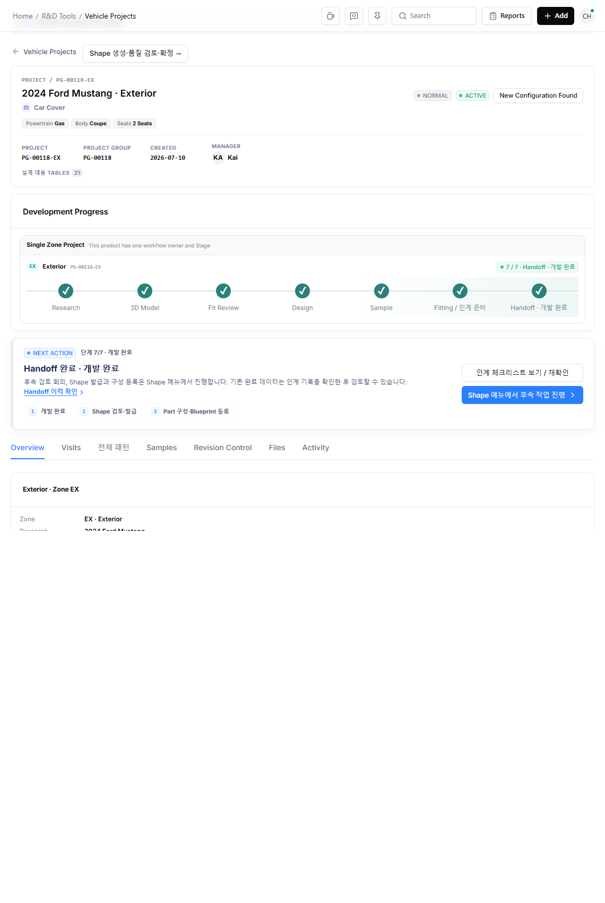
Find the vehicle for Shape review
A Shape defines the product's geometry and size. Here you confirm whether it is suitable for production.
Follow these steps
- Open Shape Management from the left menu.
- Find 2024 Ford Mustang · EX in Awaiting review / issuance.
- Click Open review → on the right. The review section expands below on the same page.
Example inputs
- Project
- PG-00118
- Zone
- EX
- Training development Shape
- CN-GUIDE
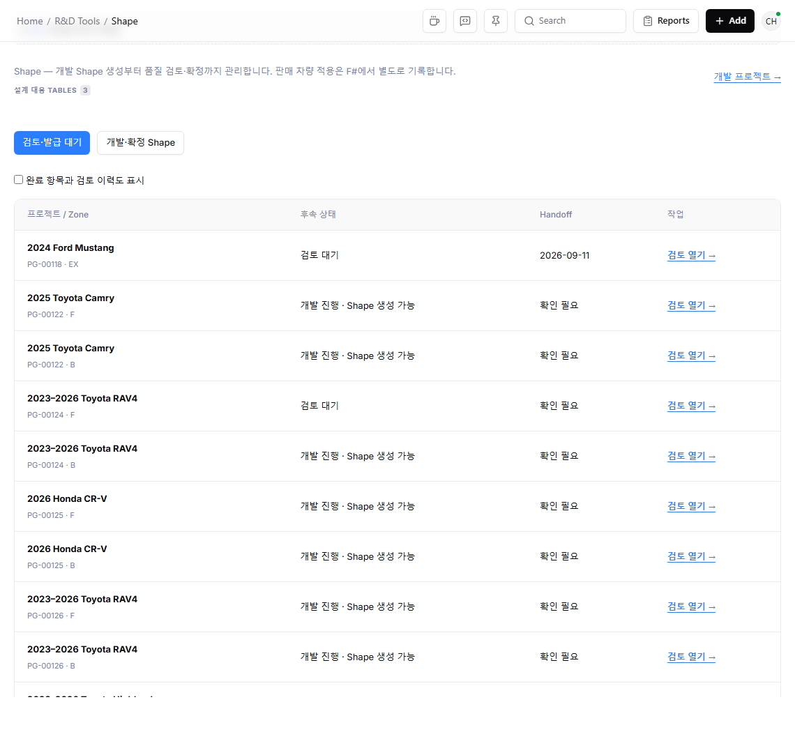
Check each part, then overall quality
A visit PASS does not replace quality checks for every part and the overall product.
Follow these steps
- Select the part named all as the observation target. In this training data, all is the pattern name.
- Enter quality PASS and supporting evidence, then record the observation. Record FAIL if there is an actual issue.
- Repeat for every part if there are multiple parts.
- Finally, switch the target to Overall product and record overall quality PASS with evidence.
Example inputs
- Part / Quality
- all / PASS
- Part evidence
- [Training example] Verified exterior cover fit and fastening
- Overall product evidence
- [Training example] Overall product fitting PASS
Record the review meeting and approval
Go beyond an informal fit assessment: record who reviewed which materials.
Follow these steps
- Enter the actual meeting date and time after fitting. Future dates are not allowed.
- Select the review lead and attendees for the four roles.
- Enter the final blueprint reference and review notes.
- Confirm that the lead reviewed and verbally approved the materials at the meeting.
- Click Record review approval.
Example inputs
- Review lead
- Kai
- Pattern Designer / Scan Team
- Young / Christian
- Coordinator / Manual Design
- JH / Taeho
- Blueprint reference
- Mustang-CN-GUIDE-Blueprint-v1.pdf (training example)
- Review notes
- [Training example] Exterior cover fitting and final pattern checked. CN-GUIDE confirmed.
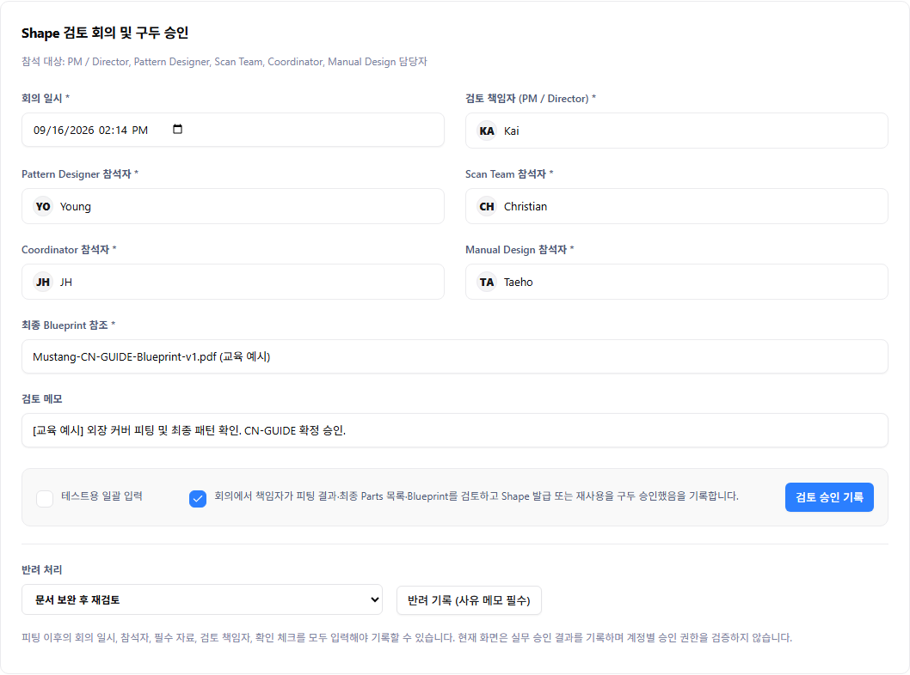
Confirm a development Shape
Convert a development reference into a confirmed specification eligible for sales vehicle fitment.
Follow these steps
- Click Confirm Shape after quality and review approval.
- Check the Shape name and enter finished Car Cover dimensions.
- If a shared-change confirmation appears, review the impact before checking it.
- This example edits an existing development Shape, so click Save changes.
- Go to Developed / Confirmed Shapes and search CN-GUIDE.
Example inputs
- Shape name
- CN-GUIDE
- Length / Height
- 480 / 140 cm
- Front width / Rear width
- 190 / 185 cm
- Status after saving
- Confirmed Shape (ACTIVE)
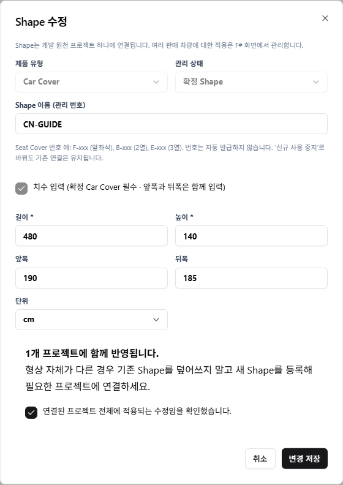
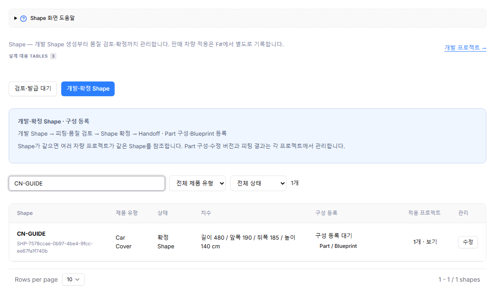
Link the parts list and blueprint to the Shape
A Shape number alone does not define what to make. Connect part names, revisions, quantities, and the complete layout.
Follow these steps
- Click Part / Blueprint on the CN-GUIDE row.
- Select 2024 Ford Mustang · EX as the approved source project.
- Click Import all approved parts.
- Enter the blueprint link and open it to verify access.
- Verify the parts list matches the blueprint, then complete the composition.
Example inputs
- Example part
- all · Revision 1 · Quantity 1
- Link practice only
- http://localhost:5173/help/example-blueprint.html
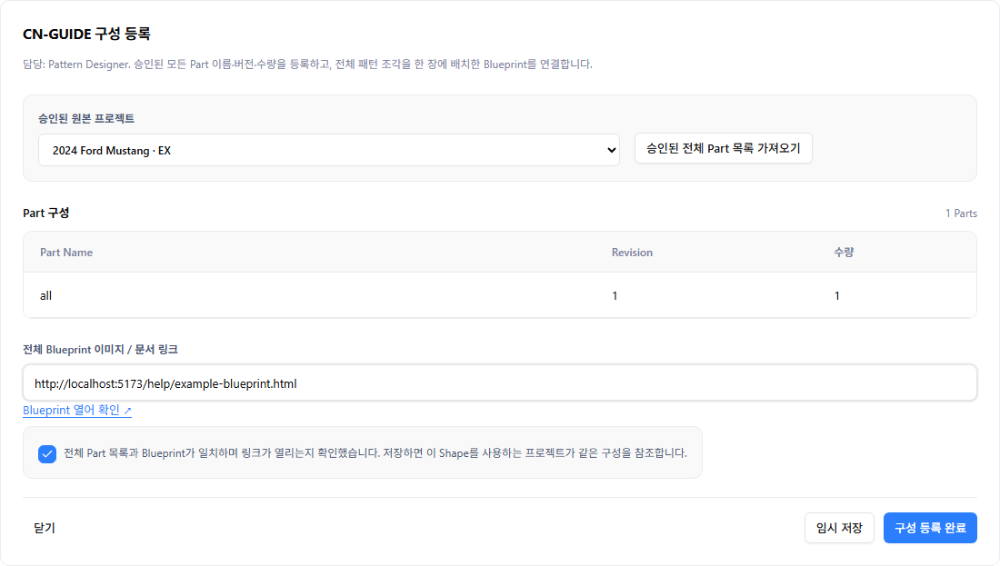
Find the sales vehicle F#
Shape identifies geometry; F# identifies a vehicle configuration using it. They are different identifiers.
Follow these steps
- Search CC20854 in Unique Vehicles.
- Confirm the vehicle is 2024 Ford Mustang and the product is Car Cover.
- Check options too. The same vehicle name may have different configurations.
Example inputs
- F#
- CC20854
- Vehicle configuration
- 2024 Ford Mustang · Coupe · 2 Seats
- Product
- Car Cover
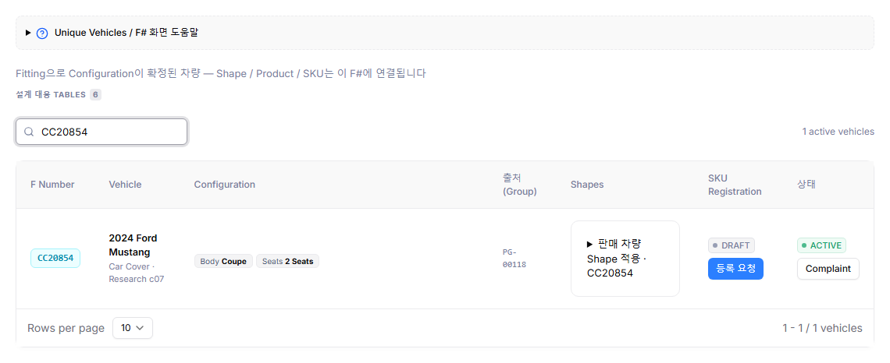
Assign the vehicle's primary Shape
Assign the Shape used by the sales vehicle, separately from the development project's Shape link.
Follow these steps
- Expand Sales vehicle Shape assignments · CC20854 on the vehicle row.
- Select Exterior for the zone and CN-GUIDE for the Shape.
- Keep PRIMARY as the assignment type and click Add assignment.
- Check for Exterior · CN-GUIDE · PRIMARY and the Current marker in assignment history.
Example inputs
- Zone
- Exterior
- Shape
- CN-GUIDE
- Assignment type
- PRIMARY = Default Shape
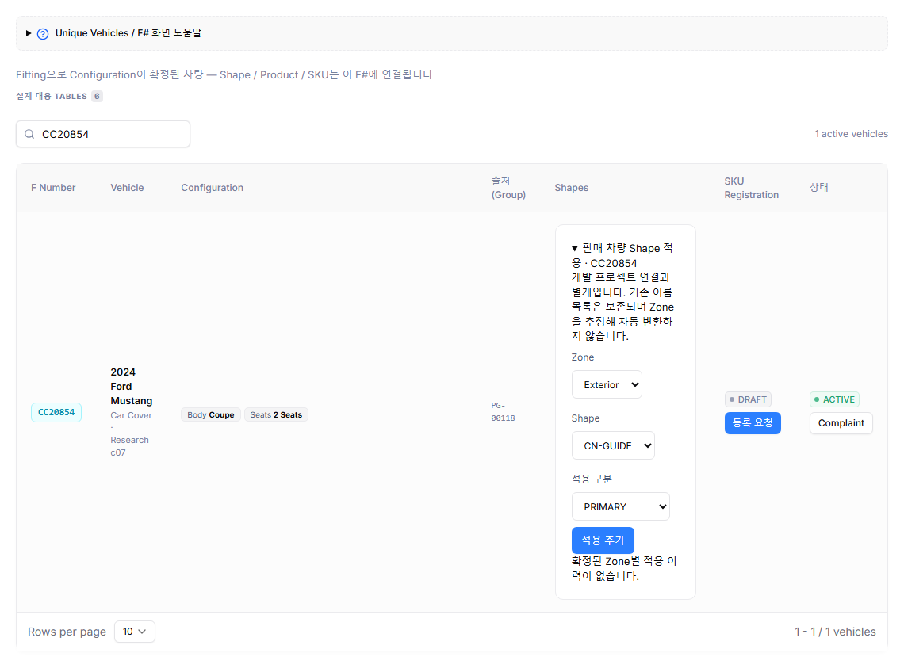
Select materials and colors and request product registration
Different materials and colors create different sales combinations, even for the same Shape.
Follow these steps
- Click Registration request on the vehicle row.
- Confirm the F#, vehicle name, and Shape at the top.
- Select material 03 · PVC and color type 1TO (solid).
- Select BK · Black.
- Check one new combination and its SKU in the submission preview.
- Submit the registration request (1 item).
Example inputs
- Material
- 03 · PVC
- Color type / Color
- 1TO / BK · Black
- Generated SKU
- CC-CN-03-GUIDE-BK-1TO
- Result
- Registration request + DRAFT product
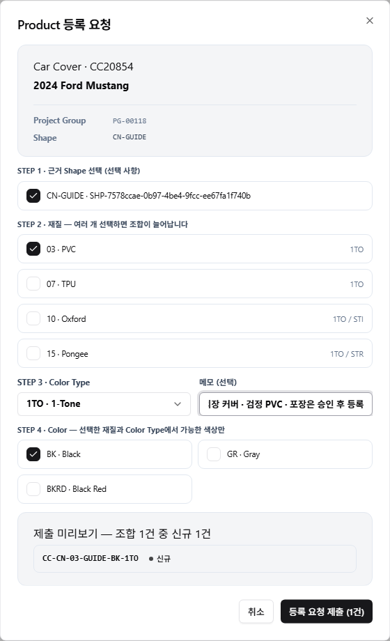
Open the request and submit its approval route
After creating the request, specify who must approve it as a separate step.
Follow these steps
- Search GUIDE from the SKU in Product Registrations.
- Open Review / History on the request.
- Check the SKU and reference Shape.
- Select a FINAL approver. This exercise uses Kai only and omits FORWARD.
- Click Confirm route and submit for approval.
Example inputs
- Example registration ID
- VPR-0002 (generated numbers vary by environment)
- FINAL
- Required final approver
- FORWARD
- Optional intermediate approval step
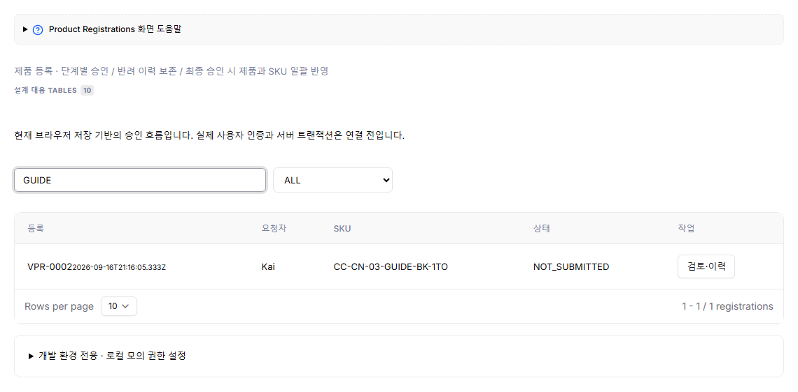
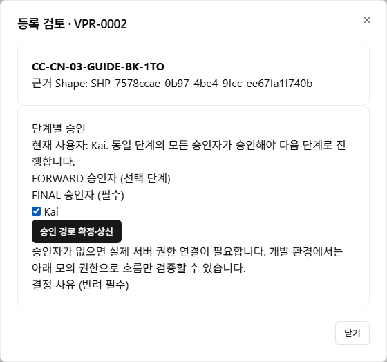
Complete final approval and check results
Finalize the requested sales combinations. This approval is separate from Shape quality approval.
Follow these steps
- Confirm the current user matches the assigned approver.
- Review the SKU, Shape, material, and color combination.
- Enter a decision note and approve. If there is a problem, provide a reason and reject.
- Verify the final step is APPROVED.
Example inputs
- Approval note
- [Training example] Shape assignment, material, color, and SKU verified
- Approval complete
- Product ACTIVE + First SKU history record
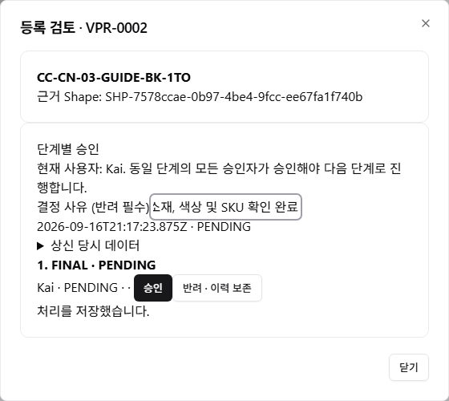
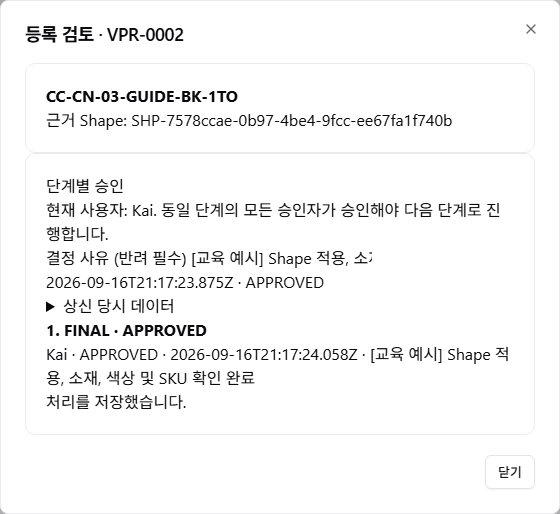
Check the sales product in Catalog
This screen manages products themselves, not registration requests.
Follow these steps
- Open Product Catalog at /products.
- Search GUIDE or the full SKU.
- Check the SKU, F#, Shape, material, and ACTIVE status.
- Click the product row to open details.
Example inputs
- Search term
- GUIDE
- SKU
- CC-CN-03-GUIDE-BK-1TO
- F# / Shape
- CC20854 / CN-GUIDE
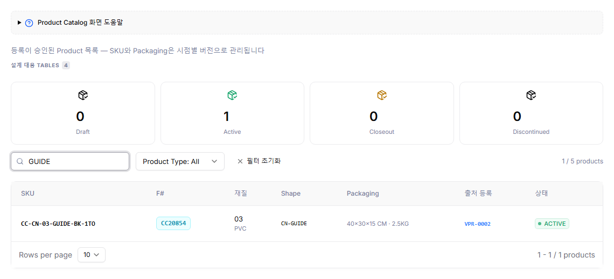
Register packaging to finish
Record the shipping package's dimensions and weight, not the finished product's dimensions.
Follow these steps
- Click Issue new packaging beside Packaging history.
- Enter length, width, height, weight, and the effective start date.
- Issue the version, close the dialog, and check current packaging history.
- Issue another version when packaging changes. SKU changes also use Issue new SKU to preserve history.
Example inputs
- Package length × Width × Height
- 40 × 30 × 15 cm
- Weight
- 2.5 kg
- Effective start date
- Actual effective date (screenshot: September 16, 2026)
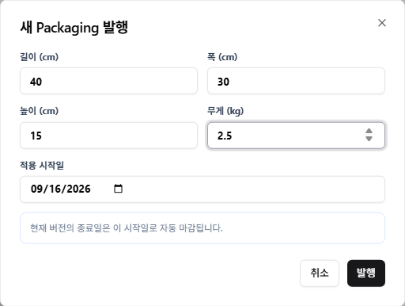
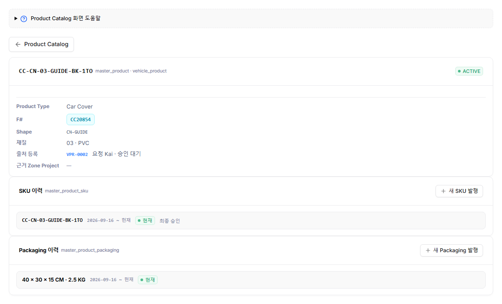
The approver list is empty
Product approval currently uses a browser-based test flow. Server authentication and approval permissions still need integration. The settings below do not grant production access.
- Near the bottom of Product Registrations, expandDevelopment only · Local mock permissionsto view the settings.
- In training, Kai's FINAL permission was selected. Reopen Review / History to select Kai as FINAL approver.
- Use FORWARD and FINAL separately to test multi-role approval sequences. This simple guide uses only one FINAL step.
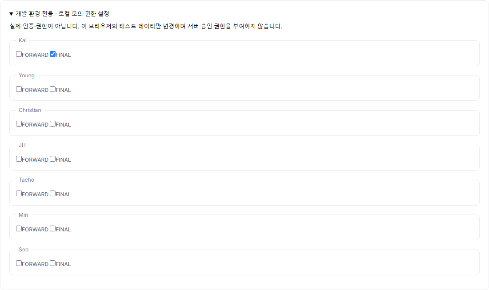
Check these items if you get stuck
| What you see | What to check / Next action |
|---|---|
| Review approval button disabled | Check fitting PASS, part and overall quality PASS, attendees, a post-fitting meeting time, blueprint, and confirmation. |
| Vehicle F# missing from list | The new F# creation flow is incomplete. Ask the responsible team about registration. Do not substitute another vehicle. |
| Shape missing from selection | Confirm it matches the vehicle's product type and is confirmed ACTIVE. |
| No Shape on registration request | Check that PRIMARY assignments per zone were saved in Unique Vehicles. A development project link alone is insufficient. |
| Zero new combinations / Submit disabled | Check materials, colors, Shape assignment, and duplicate SKUs. |
| Request exists but is NOT_SUBMITTED | Only the request was created. Confirm and submit the approval route in Review / History. |
| No approval button | Check the current step, assigned approver, current user, and active permissions. Do not approve on another person's behalf. |
| Product appears in Catalog but is DRAFT | List visibility and final approval differ. Check final approval in Product Registrations. |
| Rejected | Review the reason and history, correct the information, and resubmit a new approval request while preserving the old record. |
What differs for Seat Covers?
The overall flow is the same. Confirm Shapes for the required front (F), second-row (B), and third-row (E) zones and assign each as PRIMARY. Registration generates material/color SKUs from those assignments. Confirm whether you need front seats only or a full set and verify the required zones first.
Why are there three separate approvals?
Sample inspection:Checks whether factory samples match drawings and change instructions.
Shape review:Confirms geometry using vehicle fitting, final parts, and the blueprint.
Product registration approval:Approves sales combinations based on the Shape and vehicle fitment.
Are Shape and packaging dimensions the same?
No. Shape values such as 480 × 140 describe example finished geometry; packaging values such as 40 × 30 × 15 describe the shipping box. Do not copy one into the other.
ACTIVE product but Pending approval in details?
The source registration summary may retain an older Pending approval label even after final stage approval; the archived screenshot shows this mismatch. Check the actual APPROVED step history in Product Registrations together with product ACTIVE. The summary linkage needs further refinement.
Can this be used immediately for real work?
This guide explains the prototype UI. Fictional dimensions, practice blueprints, and mock permissions do not replace production, inspections, or official approvals. Shared server storage, authentication, and new F# creation require separate completion.